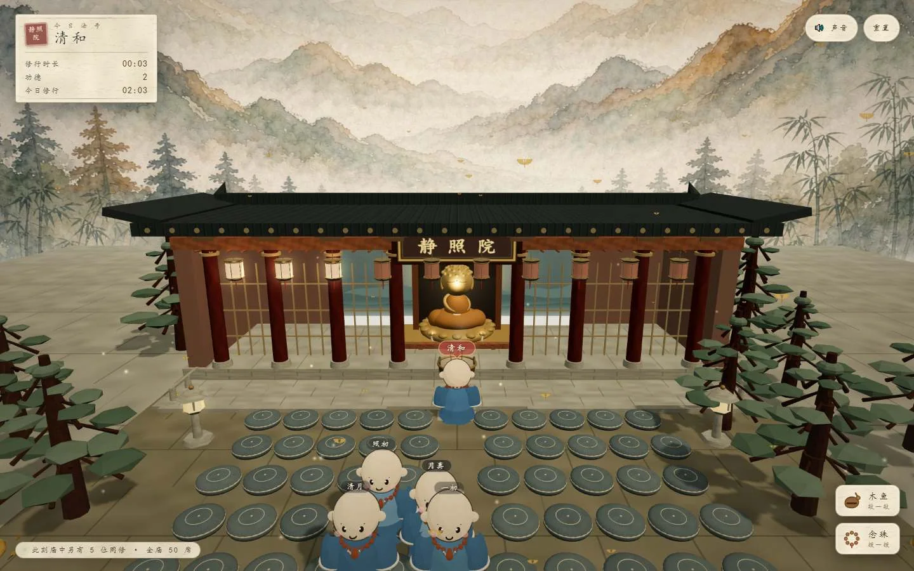
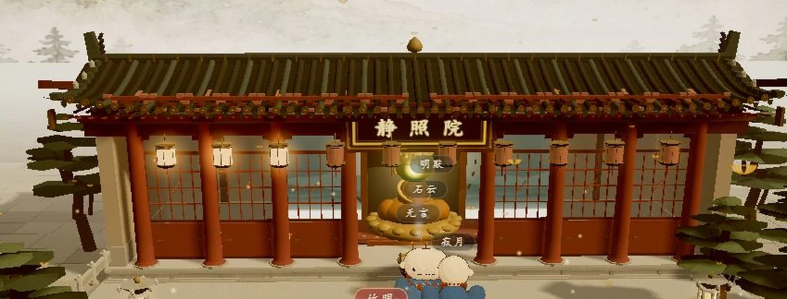
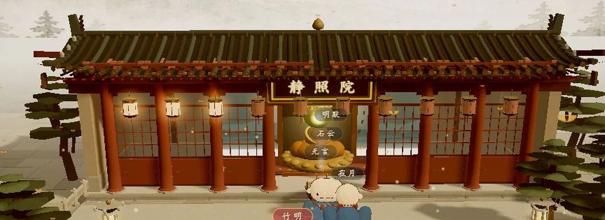
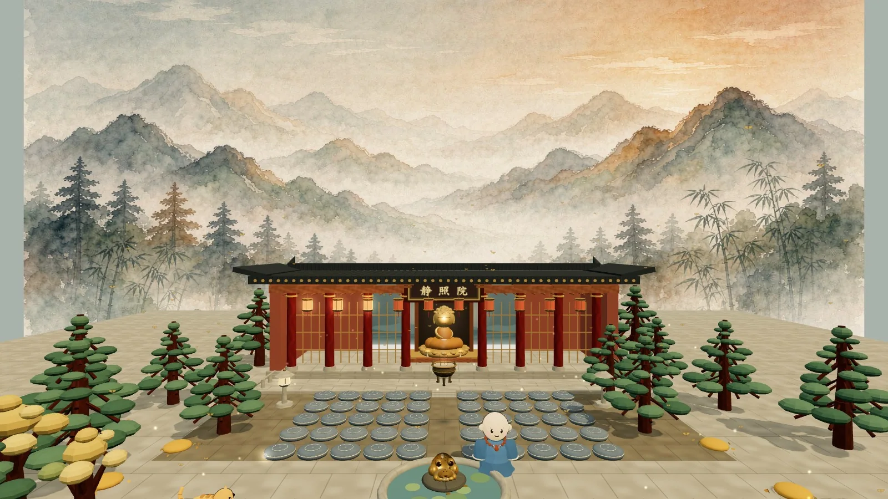
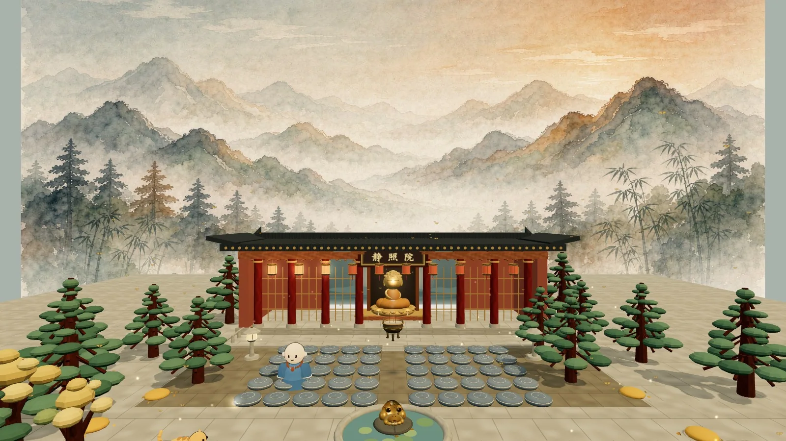
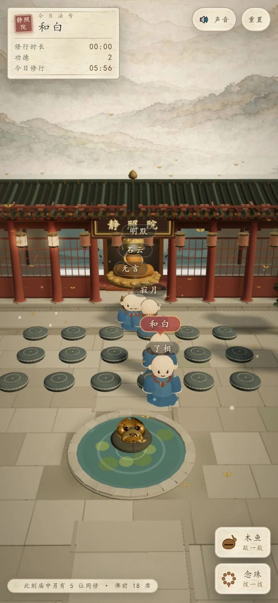
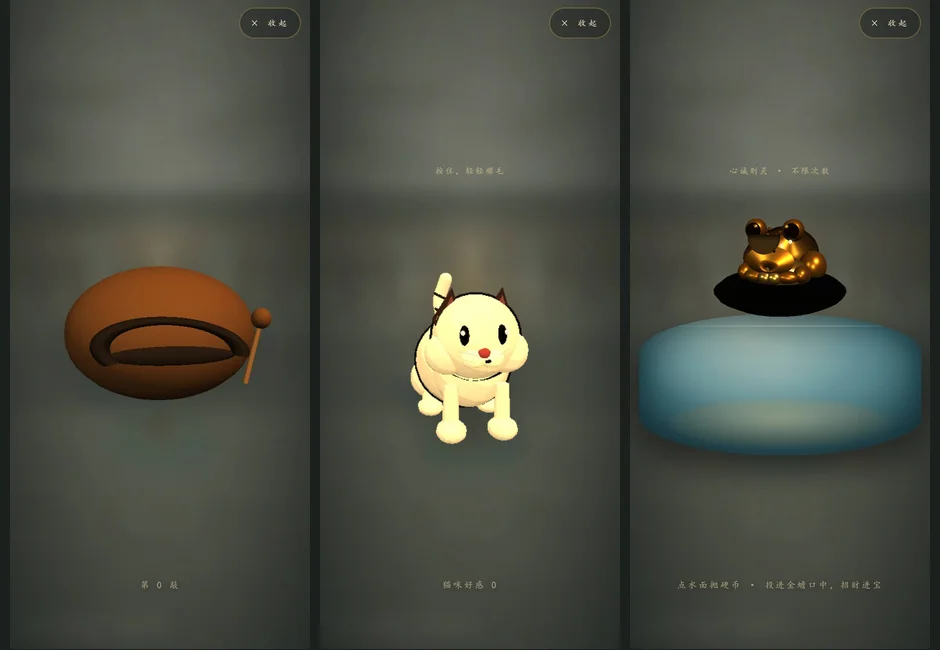

作品 05 / WEB 3D
静照院Zen Court
一座可以走进去的 3D 小庙：合掌、跪拜、上香、点灯、撸猫、抛硬币、扫落叶，七件事都是真的能做。
- 平台
- 桌面与移动端 Web
- 技术
- Three.js r187 · Blender · WebSocket · 原生 JS
- 状态
- 线上可玩

七件小事
点自己合掌，点拜垫跪拜，点香炉上一炷香（三炷封炉），点长明灯写一个愿望点亮它，蹲下来顺一顺庙里的猫，往荷池金蟾嘴里抛一枚硬币（不限次数，投中招财进宝），再把院子里的落叶堆扫一扫——每件事都有独立的放大交互界面，不是按钮，是动作。
所有东西都要先走过去才能碰：悬停会亮起一圈柔光和标签，隔着半个院子点不到。
同房间真人
进庙随机赐一个两字法号，同修以蓝衣小沙弥的样子实时走来走去，合掌跪拜互相可见，满员 50 席——「在线逛」的链接就是真实多人在线（WebSocket 同房间），打开两个标签页就能互相看见。GitHub 仓库里附了同一套 server.js，本地 node server.js 也能开一间自己的庙。
模型与美术 v2
小沙弥、金蟾、坐佛、蒲团四件模型按参考图手工建件导出 GLB。第二轮把整体收敛成「清雅水墨国风 + 低饱和 3+1 色」：宣纸米 / 墨青 / 低饱和朱砂为主，旧金只作极少勾边；收掉过曝平光，把唯一亮点留给佛前，松林改成棱面块叶，蒲团错列并做四档布色微差。
六个放大交互界面（木鱼、念珠、长明灯、上香、撸猫、抛币）不再用 CSS 另画一套：直接复用场景里的建模函数与同一套灯光，离屏渲染成透明 PNG。放大后的猫、金蟾、香炉，和院子里看到的是同一个模型。
另附 docs/art-prompt-pack-v1.md：风格锚点、色板、变量槽位表、三视图一致性规则与三级降级方案，供后续扩批素材时锁定风格。
场景重建 v3
第三轮把整座静态环境推倒重来。此前的大殿、屋顶、台基、树与铺装其实是 61 个基础几何体拼出来的占位模型，而小沙弥、金蟾、坐佛这些 GLB 反倒已经很精细——两者精度差一个数量级，光影再怎么调都显得「不像成品」。
于是用 Blender 4.2.14 重新建了整座佛院，导出单一 court.glb：举折起翘的曲面屋顶、51 垄筒瓦与瓦当滴水、正脊垂脊与鸱吻脊兽、带柱础收分的车削柱、层级斗拱、棂条格扇、须弥座台基与望柱栏板、石板铺装与中轴御道、分叉主干的松与银杏、六角石灯、荷池石沿。约 6.2 万三角面，建模脚本随仓库提供，可一键重建。
拜垫、香炉、长明灯、猫、金蟾与大佛仍是代码里的动态对象，坐标一个没动——换了整座殿，交互热点零重接。顺带把同修出生点铺成 4 列 3 排、法号牌加屏幕空间避让，几个人不再叠在一起。
手机端
竖屏 / 横屏各有独立断点：HUD 与工具按钮不再重叠，放大主体按可用宽高放大，念珠改「上下滑动」手势；触摸点击带 44px 命中容差，禁掉了误触发的悬停提示与系统蓝色点击框，心愿输入框随软键盘上移。竖屏切专用相机机位，渲染分辨率按设备降档。
界面





